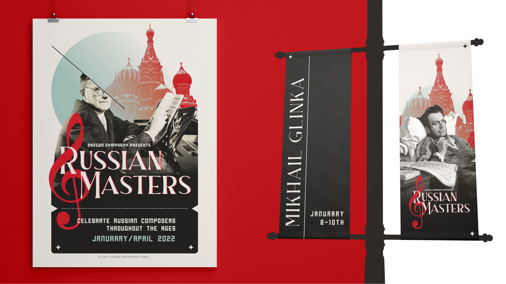
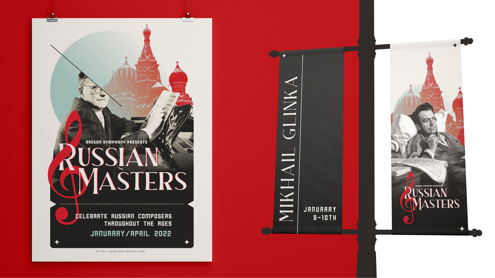

04.
Symphony Event Branding
YEAR
2021
TOOLS
InDesign, Photoshop
SUMMARY
The Russian Masters Symphony is an event I created for the Oregon Symphony located in Portland, OR. The purpose of the project was to create a cohesive design system with an event booklet and promotional material. I was responsible for putting together the entire event, from the copy text to the visual elements. I was greatly inspired by Russian Constructivism, which is an art movement I often take inspiration from in my own work.
 
